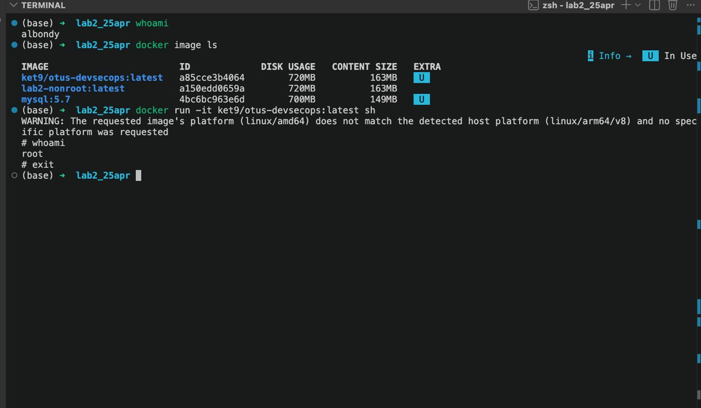
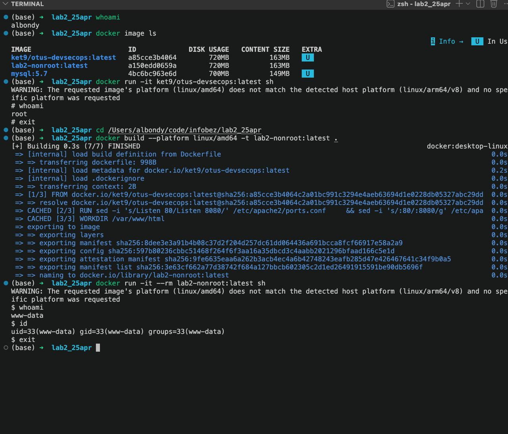
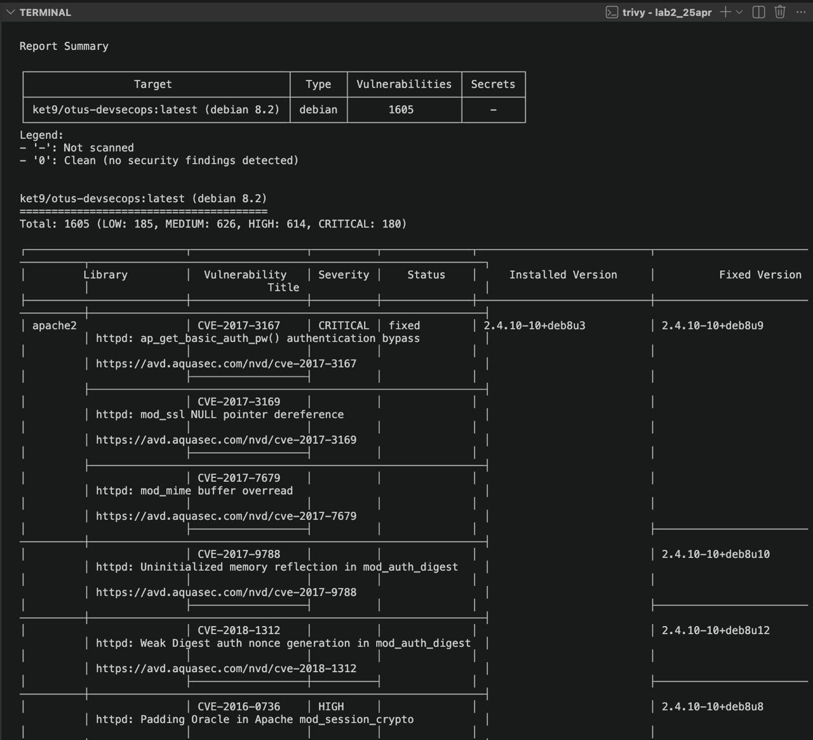

Взял образ из прошлой лабы: ket9/otus-devsecops:latest. Сначала whoami на хосте, получил albondy.
Дальше docker image ls:
IMAGE ID DISK USAGE CONTENT SIZE
ket9/otus-devsecops:latest a85cce3b4064 720MB 163MB
lab2-nonroot:latest bd397b4235ca 720MB 163MB
mysql:5.7 4bc6bc963e6d 700MB 149MBЗапускаю sh внутри контейнера: docker run -it ket9/otus-devsecops:latest sh. Снова whoami, теперь уже root.
Посмотрим че покажет whoami. По дефолту в контейнере все процессы запускаются от рута. В общем не оч, из коробки ниче не настроено.

Dockerfile поверх того же образа:
FROM ket9/otus-devsecops:latest
RUN sed -i 's/Listen 80/Listen 8080/' /etc/apache2/ports.conf \
&& sed -i 's/:80/:8080/g' /etc/apache2/sites-available/000-default.conf \
&& chown -R www-data:www-data /var/www/html /var/log/apache2 /var/run/apache2 /var/lock/apache2
USER www-data
WORKDIR /var/www/html
EXPOSE 8080
CMD ["apache2-foreground"]Поменял немного и закинул на www-data. Юзер www-data уже есть в базовом образе apache, отдельно не создавал. Apache от не-рута не может слушать порт 80, поэтому переключил на 8080 и раздал права на нужные директории.
Собрал и проверил что юзер сменился:
$ docker build --platform linux/amd64 -t lab2-nonroot:latest .
$ docker run -it --rm lab2-nonroot:latest sh
$ whoami
www-data
$ id
uid=33(www-data) gid=33(www-data) groups=33(www-data)
В комментариях Dockerfile перечислил что ещё можно докрутить: заменить базу на актуальную (jessie EOL с 2020), добавить HEALTHCHECK, прикрутить .dockerignore. Из флагов запуска полезные --read-only (FS на чтение), --no-new-privileges (запрет эскалации), --cap-drop=ALL (режем все капы), -u 33:33 (форсим юзера снаружи).
Прогнал через Trivy:
trivy image --severity LOW,MEDIUM,HIGH,CRITICAL ket9/otus-devsecops:latestСводка:
ket9/otus-devsecops:latest (debian 8.2)
Total: 1605 (LOW: 185, MEDIUM: 626, HIGH: 614, CRITICAL: 180)
Trivy сразу кидает варн This OS version is no longer supported by the distribution. Debian 8 (jessie) ушёл в EOL в июне 2020. База страше моего опыта разработки.
Цифры конечно пугают, но половина это апач и его подмудули которые трижды выстреливают по одной cve. apache2, apache2-bin, apache2-data считаются как три разных пакета, хотя источник один.
Чтобы починить можно сменить базу на актуальную (закроет большую часть LOW/MEDIUM из системных либ), накатить apt-get upgrade поверх, и подключить Trivy в CI чтобы билд падал на CRITICAL/HIGH.
Сканер довольно полезная штука для каких то явных уязвимостей.